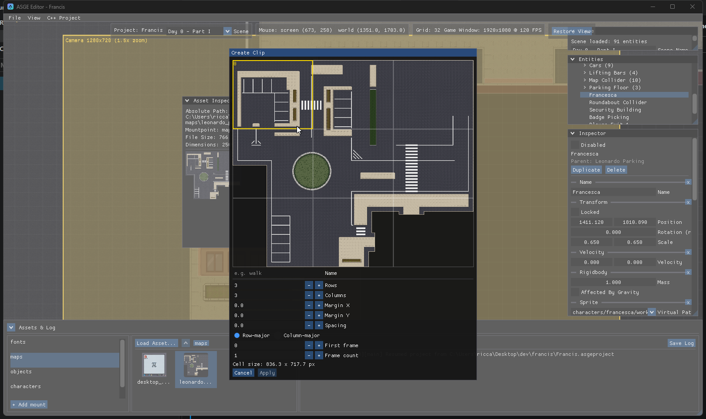
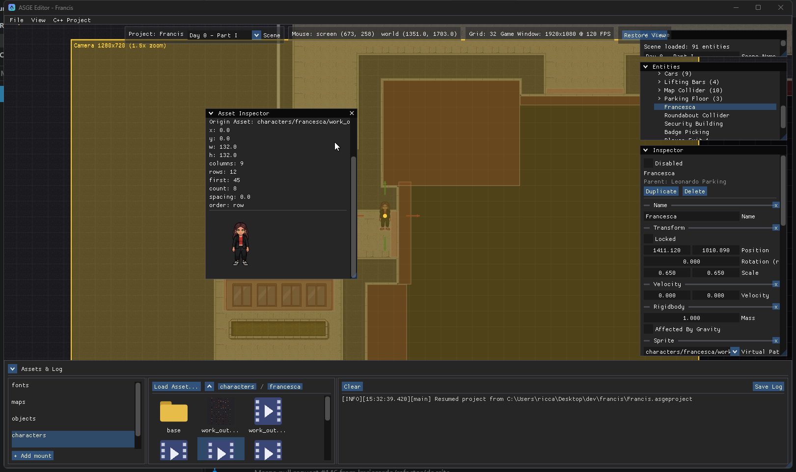

Animate a sprite
Turn a spritesheet into clips and a state machine an Animator can play, without an external tool or hand-written TOML or XML.

Steps
- Right-click the spritesheet texture in the asset explorer and choose Create Clip.
- In the modal, give the clip a Name (letters, digits,
_and-) and set Rows and Columns. Margins, spacing, row- or column-major order, the first frame and the frame count are optional. A bigger thumbnail shows a live grid overlay and the computed per-cell pixel size. - Click Apply. The editor writes
<image>_clip_<name>.tomlnext to the texture (a name that already exists is refused), then registers and selects it as a new frame table.

A frame table records which texture it slices (m_OriginAsset), so once one exists the texture's button becomes Open Clip and jumps straight to it. Importing a .toml by hand via Load Asset... that doesn't identify its own texture this way is rejected rather than imported half-configured.
Author the state machine
A frame table is one clip. Choosing between clips is the job of an animation graph, a .animsm file. In the asset explorer, click Add, then Create → Animation Graph (or Load Asset for an existing file). Double-click it, or use Open in Animation Graph from its row menu.
- The window draws the machine as a node graph: draggable state boxes and arrows for transitions, labelled with their trigger,
@endand flags. - A side column holds the initial state, the flag, trigger and clip lists, and the selected state with its transitions. Renaming or deleting a flag, trigger, clip or state updates everything that refers to it.
- The engine's own loader validates every edit and shows its error inline; a machine it rejects is never written. Box positions are saved in a
.layoutfile next to the machine, which the engine ignores.
Bind clips to frame tables
Create an Animation Clip Set from the same Create menu for a loaded machine. The clip set window lists every clip the machine declares: bind each to a loaded frame table and a frame duration. A clip the machine no longer declares is flagged. It validates and saves like the graph.
For a character that faces several ways, give a clip up to 8 directions with its directions combo. Each direction gets a frame table dropdown labelled by compass name or bearing, spread clockwise from north. A clip with one direction is saved as a plain path.
Play it on an entity
- Add an
Animatorcomponent to an entity that has a Sprite. - Pick its Clip Set from the loaded clip sets, and set Playback Speed and Start Playing. The state and frame show read-only once the clip set resolves.
- Open the Animation Graph window and turn on Preview. Only then does the animator run in the viewport, so editing never animates by itself.
With the preview on and the entity selected, its current state is outlined in the graph, with its frame and status. A checkbox per flag and a button per trigger let you drive it by hand. The Live section also shows the heading and variant, with buttons that face the animator from N to NW to check each direction. Turning the preview off restores every animator's state and every sprite's source rect.
While an Animator is playing it owns its Sprite's source rect, so the Sprite inspector shows that field as driven by the Animator. Use Reload Asset on a row after editing a file outside the editor; animators that use it are re-resolved.
Previous: Add a collider · Next: Make an entity follow a path.